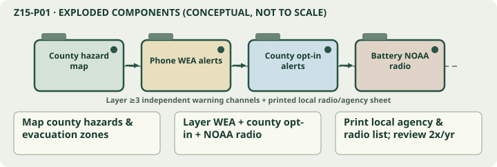

Z15-P01 · Disaster scenarios · New manuscript
Build a local jurisdiction hazard profile and multi-channel warning stack
Align household emergency plans with the real local hazards, official alert systems, and county evacuation maps where you live.
When it applies · Households, families, and rural/urban residents establishing a multi-hazard preparedness baseline.
Equipment · Smartphone with WEA alerts enabled, county opt-in alert enrollment, battery/crank NOAA Weather Radio, and printed local shelter/agency map.

Actions
- Identify the primary hazards specific to your county and neighborhood (river floodplains, tornado corridors, winter ice/blizzard feeders, wildland-urban interface, rail/highway hazmat routes) using county emergency-management maps rather than generic national checklists.[D01, D02]
- Layer at least THREE independent warning channels: Wireless Emergency Alerts (WEA) on phones, local municipal/county opt-in text/voice alerts, and a battery/hand-crank NOAA Weather Radio with SAME county coding so a dead cell tower never leaves you blind overnight.[D01, T14, T15]
- Record local county emergency management, non-emergency dispatch, utility outage hotlines, and official local radio stations on paper reviewed twice yearly.[D01, U16]
Failure recognition · Relying solely on outdoor tornado sirens or social media feeds that fail when cell towers lose power during a nighttime storm.[D01, D03]
Verify · Confirm WEA enabled, county opt-in registered, NOAA radio SAME code tested, and printed local hazard/agency list stored with kits.[D01, T15]
Stop or change course · Do not assume out-of-state or outdated maps reflect current evacuation zones, sirens, or local emergency procedures—verify directly with local authorities.[D01]
Evidence and editorial notes
- D01 · FEMA / Ready.gov · Be Informed and Multi-Hazard Preparedness (current web edition)
- Section: Be Informed > Local Hazard Assessment, Alerts, and Jurisdiction Mapping · Conditions: Households preparing for regional multi-hazard emergencies
Support: Identify specific local hazards, sign up for county/municipal opt-in alerts alongside WEA/EAS and NOAA Weather Radio, know official evacuation zone labels, and review household plans twice yearly.
Limitations: Emergency warning systems, siren policies, and shelter locations vary strictly by county and municipality. · Conflicting evidence: None; aligns with T14 and T15.
Editorial note: Establishes jurisdiction-specific alert and planning baseline in Z15. · Specialist reviewer: Emergency management specialist
Primary source · checked 2026-11-24 - D02 · Minnesota HSEM · Weather Awareness and Preparedness (current web edition)
- Section: Minnesota Severe Weather and Winter Hazard Seasonal Profile · Conditions: Upper Midwest and Minnesota households across annual hazard seasons
Support: Anticipate Minnesota's distinct multi-hazard calendar: spring snowmelt flooding, spring–summer severe thunderstorms, derechos, tornadoes, and extreme heat, wildfire smoke plumes, and autumn–winter blizzards, ice storms, and wind-chill emergencies.
Limitations: Weather extremes increasingly occur outside historical peak months; rely on live NWS forecasts over calendar assumptions. · Conflicting evidence: None; grounds regional Upper Midwest applicability in Z15.
Editorial note: Connects seasonal hazard preparedness to local agency advisories. · Specialist reviewer: Regional emergency management and meteorology
Primary source · checked 2026-11-24 - D03 · FEMA / Ready.gov · Tornadoes (current web edition)
- Section: Tornadoes > Watch vs Warning, Safe Room Selection, and Post-Storm Hazards · Conditions: Developing supercells, Tornado Watches, and Tornado Warnings
Support: Act immediately on a Tornado Warning by moving to a FEMA safe room, storm shelter, basement, or lowest-level small interior room away from windows; protect head/neck from flying debris, never shelter in vehicles/mobile homes or under overpasses, and watch for downed power lines and gas leaks afterward.
Limitations: Outdoor sirens are designed to alert people outdoors and may be inaudible inside insulated homes during storms. · Conflicting evidence: None; aligns with E17 and NWS-TORNADO.
Editorial note: Core tornado shelter-selection and post-storm hazard evidence in Z15. · Specialist reviewer: Meteorology and emergency management
Primary source · checked 2026-11-24 - T14 · FEMA / Ready.gov · Emergency Alerts (current web edition)
- Section: Emergency Alerts > WEA, EAS, and NOAA Weather Radio · Conditions: Receiving time-critical hazard warnings at home or outdoors
Support: Use multiple redundant alert channels—Wireless Emergency Alerts, local opt-in alerts, and battery/crank NOAA Weather Radio—so a single dead phone or tower outage does not eliminate warning reception.
Limitations: Backcountry terrain can block both cellular and VHF weather radio reception. · Conflicting evidence: None; aligns with NOAA-NWR.
Editorial note: Grounds emergency warning redundancy in Z01 communication cards. · Specialist reviewer: Emergency management and communications
Primary source · checked 2026-11-24 - T15 · NOAA NWS · NOAA Weather Radio All Hazards (current web edition)
- Section: NOAA Weather Radio All Hazards > Coverage and Receivers · Conditions: Weather and civil-hazard monitoring across the United States
Support: NOAA Weather Radio broadcasts continuous official warnings directly from NWS offices on VHF frequencies; battery or hand-crank receivers with SAME alerting operate independently of cellular networks.
Limitations: VHF line-of-sight range can be attenuated in deep valleys or dense metal structures; verify local transmitter reception before relying on it. · Conflicting evidence: None; aligns with READY-ALERTS.
Editorial note: Documents offline weather-alert radio capabilities and reception limits. · Specialist reviewer: Meteorology and emergency communications
Primary source · checked 2026-11-24 - U16 · FEMA / Ready.gov · Emergency Alerts (current web edition)
- Section: Household Emergency Communications During Grid and Cell Outages · Conditions: Residential power, internet, and cellular tower disruptions
Support: Maintain a battery/crank NOAA Weather Radio, spare power banks, car-charger backups, written contact cards, and local AM/FM broadcast station lists so warnings and utility restoration updates remain accessible without Wi-Fi or cell data.
Limitations: Cordless landline handsets and VoIP routers fail immediately when house power drops unless separately backed up. · Conflicting evidence: None; links Z13 household comms to Z15 disaster alerts.
Editorial note: Grounds home communications continuity during extended blackouts. · Specialist reviewer: Emergency communications specialist
Primary source · checked 2026-11-24
Source lineage · FEMA Ready.gov Be Informed and Alerts; new manuscript · Classification · New manuscript.